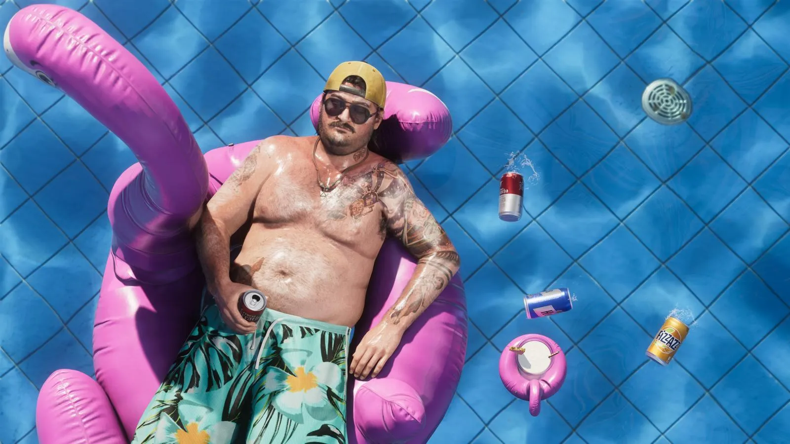
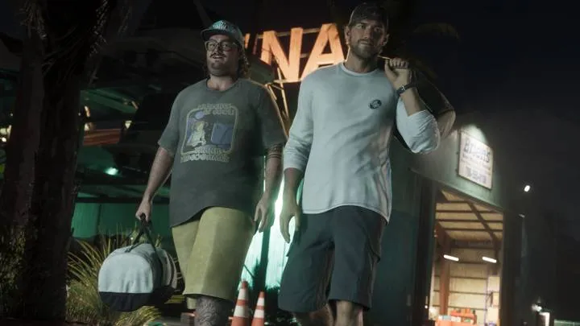

Кэл Хэмптон в GTA 6
Друг Джейсона · Обновлено:

Кэл Хэмптон — друг Джейсона Дюваля и, как и он, человек контрабандиста Брайана Хедера. Любитель пива, домашнего уюта и теорий заговора.
- Друг Джейсона и тоже работает на Брайана Хедера.
- Безопаснее всего чувствует себя дома.
- Слушает переговоры береговой охраны с парой банок пива.
- По словам Rockstar, живёт «на отливе Америки» и доволен этим.
- Склонен к лёгкой паранойе — а у Джейсона планы побольше.
Кто это: официальное описание
По официальному описанию Rockstar, Кэл Хэмптон — друг Джейсона и ещё один человек Брайана. Безопаснее всего он чувствует себя дома: пара банок пива, переговоры береговой охраны в эфире и несколько вкладок в приватном режиме браузера.
Rockstar пишет, что Кэл находится «на отливе Америки» — и ему там хорошо. «Обыденной паранойе нужна компания», но у его друга Джейсона планы побольше.
Реплики Кэла на официальной странице — сплошь теории заговора: о «слишком ровных» стаях птиц и о том, что «у власти психопаты».
Цитаты
«А что, если всё в интернете — правда?»
Кэл · официальная страница персонажа, Rockstar Games
«Слишком уж много птиц летает идеальным строем.»
Кэл · официальная страница персонажа, Rockstar Games
«У власти психопаты. Привыкай.»
Кэл · официальная страница персонажа, Rockstar Games
Официальные кадры


Связи с другими персонажами
- Джейсон Дюваль — друг
- Брайан Хедер — наниматель
Что пока неизвестно
- Какую роль Кэл играет в сюжете, Rockstar не раскрывала.
- В трейлерах Кэл официально не подписан — кадры с ним приводим только с официальных скриншотов.
После выхода игры 19 ноября 2026 года дополним страницу сюжетом и миссиями — без спойлеров в начале.
Кэл Хэмптон и реальность
 vs
vs
 vs
vsЧастые вопросы
Кто такой Кэл Хэмптон?
Друг Джейсона Дюваля, который тоже работает на контрабандиста Брайана Хедера.
Почему Кэл слушает береговую охрану?
Rockstar описывает это как его любимый способ провести вечер дома — с пивом и рацией.
Источник: Rockstar Games — официальная страница персонажа на rockstargames.com/VI (перевод Blip Guides), трейлеры 1–3. Изображения: Rockstar Games.
Каждый день — одно сравнение: кадр игры рядом с реальным фото. Подписывайтесь:
YouTubeInstagramTikTok